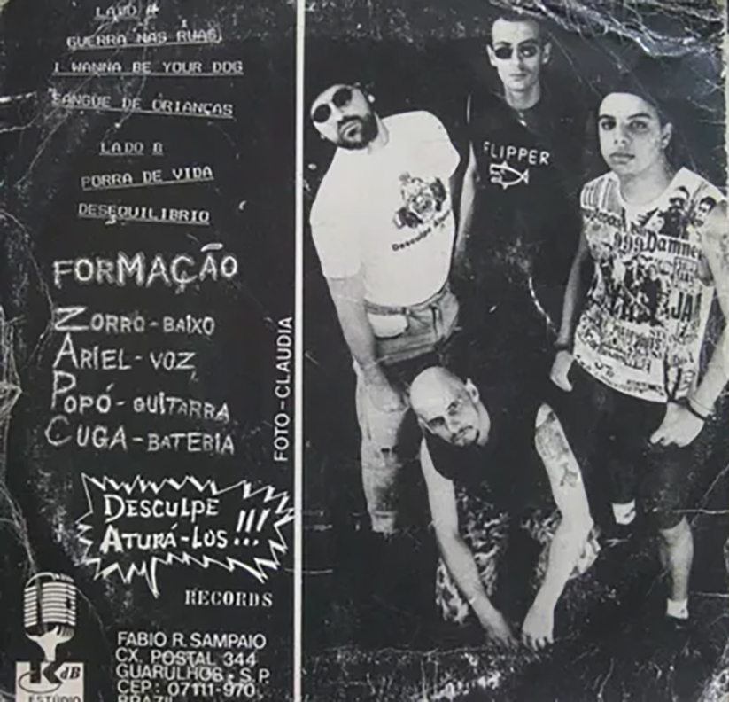
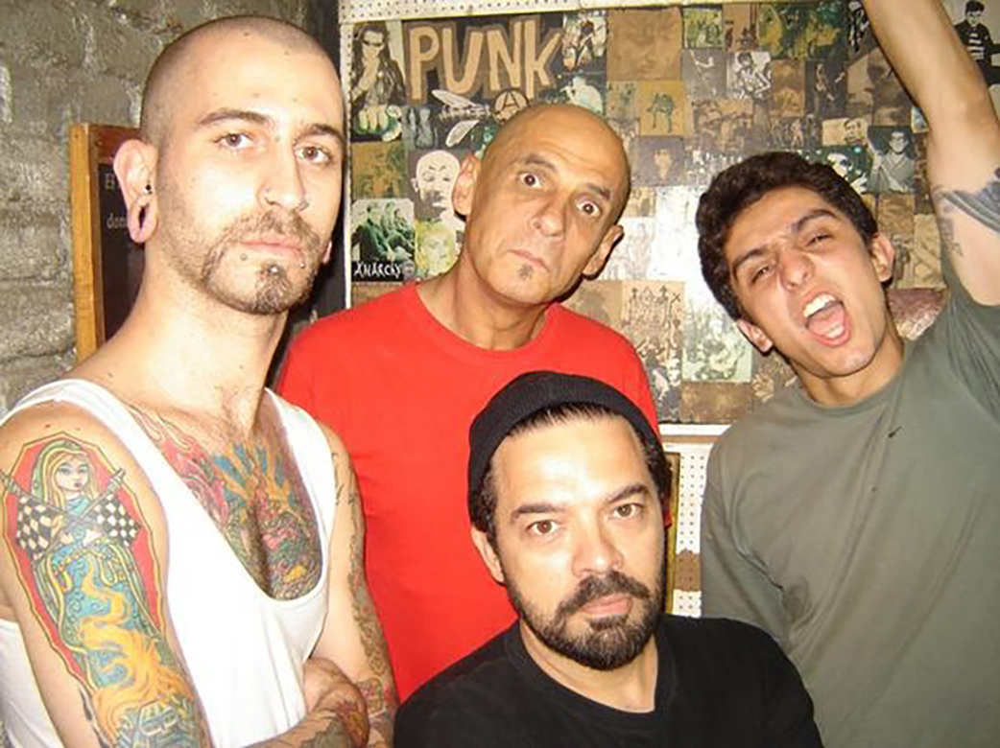
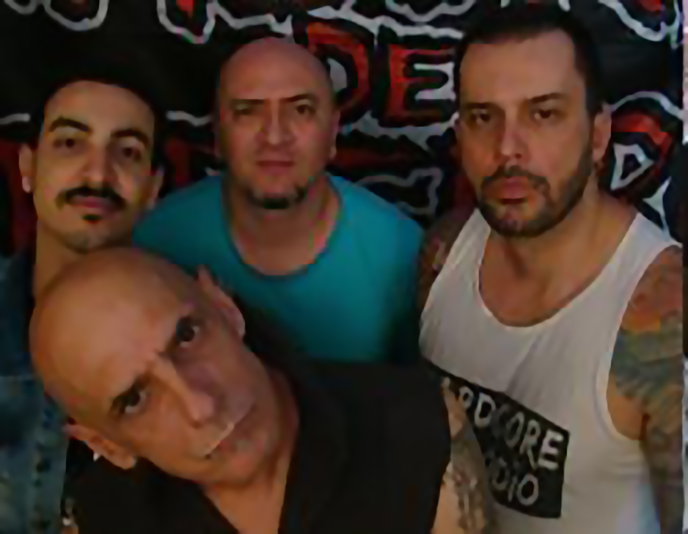
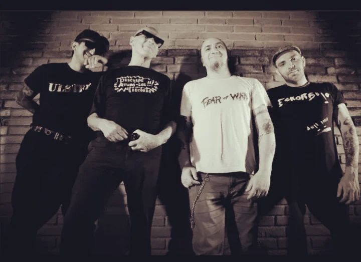
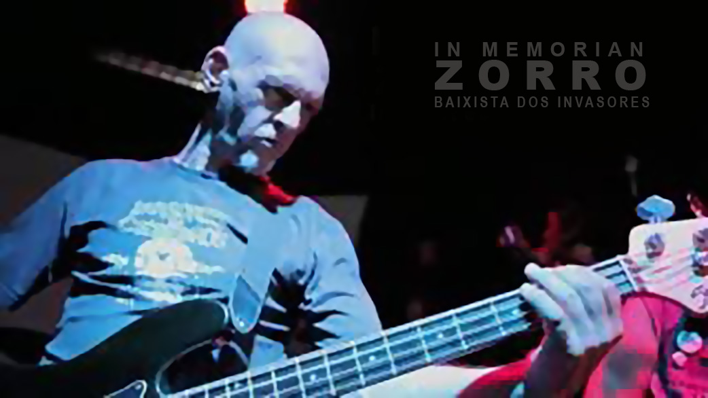

*CASO QUEIRA FAZER DOWLOAD, É SÓ CLICAR NA IMAGEM COM O BOTÃO DIREITO!*
A história

A banda surgiu em 1988 e de lá prá cá já se passaram 34 anos e muita coisa mudou, inclusive a formação.
Da formação original resta o vocalista Ariel, que pertenceu às seminais bandas paulistanas: Restos de Nada de 1978 a 1980; Desequilíbrio em 1981 e Inocentes de 1981 a 1983, tendo lançado discos de vinil, vídeos e cds em todas as bandas de que participou.
Ao longo desses anos já fizemos shows memoráveis, outros nem tanto e temos a destacar os Shows com bandas internacionais com the Varukers, the Exploited, Riistetyt, the Queers, Cockney Rejects, GBH. Shows na TV: Musikaos, Clipes na MTV, entrevistas na TV Cultura, Portal IG no programa Poploaded. Rádios: Brasil 2000, 89 FM, Trianon, Antena Zero e diversas Rádios Livres. Shows em casas Noturnas, como Hangar 110, Aeroanta, Black Jack, Outs, Fofinho Rock Club, Inferno Club, Clash Club.
Festivais como: Punk na Páskoa, A Um Passo do Fim do Mundo, Underground Festival, Uspcore, Galeria no Rock, Virada Cultural (2016 e 2017) e Circuito Municipal de Cultura em 2016. Apresentação em Estados como Distrito Federal, Rio de Janeiro, Paraná, Santa Catarina, Pernambuco, Mato Grosso do Sul, Rio Grande do Sul, Bahia e nas principais cidades do interior paulista.
Formação original

- Ariel-voz
- Zorro-baixo
- Popó-guitarra
- ZCuga-bateria
Outras formações

- Ariel-voz
- Não sei-baixo
- Luiz-guitarra
- Douglinhas-bateria
Outras formações

- Ariel-voz
- DenãoSk8-baixo
- Renatão77-guitarra
- Limão-bateria
Formação original (2021 até hoje)

- Ariel-voz
- DenãoSk8-baixo
- Raul-guitarra
- Douglinhas-bateria
Zorro - fundador da banda, que nos deixou em 2016
